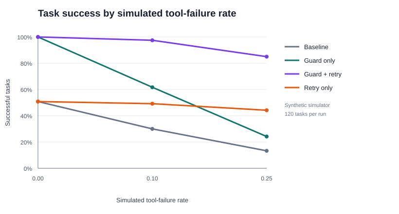
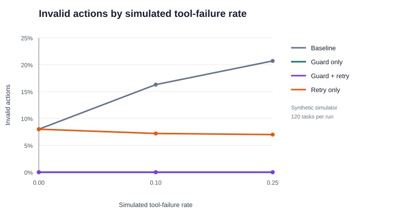

Experiment · Agentic AI · 21 October 2026
ToolGuard: testing tool guards and retries in an AI agent
Updated 21 October 2026 · Reproducible benchmark and small local-model pilot
An agent can fail in two different ways: it can choose an invalid action, or a valid tool call can fail at runtime. ToolGuard tests a simple idea: validate actions before execution, then use bounded retries to recover from transient failures.
Key findings
- In the 120-task synthetic benchmark, the guarded-and-retry policy achieved 97.5% task success at a simulated tool-failure rate of 10%, and 85.0% at 25%.
- The action gate recorded a 0% invalid-action rate for both guarded policies in this simulator.
- A separate Qwen 2.5 3B pilot covered only eight tasks. Its promising result is preliminary, not conclusive evidence of general performance.
What was tested?
The project compares four policies: a baseline, action guard only, bounded retry only, and action guard plus retry. The synthetic experiment ran 120 tasks at each of three configured tool-failure rates (0%, 10%, and 25%), with four policies per task and rate: 1,440 episodes in total. The run used seed 7. The project's seven unit tests passed on Python 3.9.6.
The action guard checks whether a proposed action is permitted before it reaches the tool. The retry policy makes bounded additional attempts after a failed tool call. These are separate interventions, so the comparison helps distinguish preventing invalid actions from recovering after runtime failures.


Synthetic benchmark results
| Tool-failure rate | Policy | Success | Invalid actions | Mean tool calls |
|---|---|---|---|---|
| 0% | Baseline | 50.8% | 8.0% | 5.00 |
| 0% | Guard only | 100.0% | 0.0% | 5.00 |
| 0% | Guard + retry | 100.0% | 0.0% | 5.00 |
| 0% | Retry only | 50.8% | 8.0% | 5.00 |
| 10% | Baseline | 30.0% | 16.3% | 5.00 |
| 10% | Guard only | 61.7% | 0.0% | 4.37 |
| 10% | Guard + retry | 97.5% | 0.0% | 5.53 |
| 10% | Retry only | 49.2% | 7.2% | 5.54 |
| 25% | Baseline | 13.3% | 20.7% | 5.00 |
| 25% | Guard only | 24.2% | 0.0% | 3.79 |
| 25% | Guard + retry | 85.0% | 0.0% | 6.30 |
| 25% | Retry only | 44.2% | 7.0% | 6.40 |
At the 10% configured failure rate, adding retries to the guard-only policy coincided with an increase in success from 61.7% to 97.5%. At 25%, it increased from 24.2% to 85.0%. The combined policy used more tool calls at higher failure rates, which is an important cost of recovery rather than a free improvement.
Small local LLM pilot
A separate run used the local Qwen 2.5 3B model with eight tasks, seed 7, and a configured 10% tool-failure rate. This is a different experiment from the 120-task synthetic benchmark.
| Policy | Tasks | Success | Invalid actions | Mean tool calls |
|---|---|---|---|---|
| Guard + retry | 8 | 100.0% | 0.0% | 5.125 |
| Unguarded | 8 | 62.5% | 9.4% | 6.625 |
The pilot is encouraging, but eight tasks are far too few to support a broad conclusion. Model outputs can vary across runs and model builds. More tasks, repeated seeds, confidence intervals, and a wider range of tools and models are needed.
Limitations
- The main benchmark is a scripted synthetic simulator, not a production deployment or a clinical, financial, or other high-stakes evaluation.
- The reported benchmark uses one seed; results may change with different tasks, seeds, or simulator assumptions.
- A zero invalid-action rate in a controlled simulator does not prove that a guard prevents every unsafe action in an unrestricted environment.
- The local-model pilot is small and should be treated as exploratory evidence only.
Reproduce the experiment
The repository includes the simulator, unit tests, experiment scripts, task data, generated summaries, figures, and the optional Ollama runner. Start with the README for the exact commands and environment notes.
Research note: results shown here are from the reported local runs. The synthetic benchmark and the eight-task local LLM pilot are reported separately. This is an engineering experiment, not a claim of validated real-world agent safety.